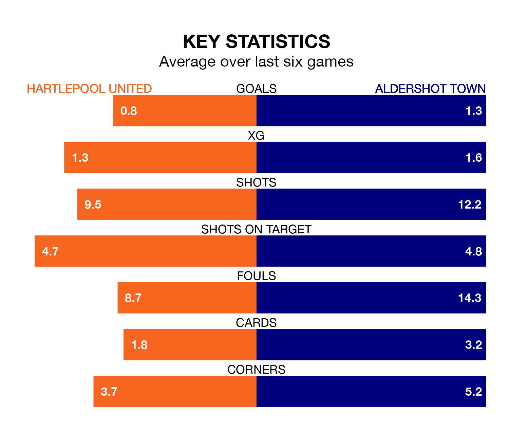

Aldershot Town are strong favourites to take all three points despite Hartlepool United's home advantage in Saturday's match at the Suit Direct Stadium.
*Betting Company* are offering odds of 1.99 on Aldershot sealing the win, with the visitors sitting eighth in the National League table.
Hartlepool, who are 13th in the league and 12 points behind the Shots, are priced at 2.9 to win. A draw is set at 3.65.
With 70 goals in 42 games so far this season, Aldershot are scoring more than average in the league with 1.7 goals per game. But they are conceding more than average too, letting in 75 goals at a rate of 1.8 per game.
Hartlepool, meanwhile, are average scorers, with 1.5 goals per game. They have conceded 1.8 goals per game.
In the last 10 years, Hartlepool and Aldershot have played each other on nine occasions. Hartlepool won four of them, Aldershot three, and they drew twice.
On average, Pools scored 1.6 goals and the Shots 1.1 in those matches.
Their last meeting was on October 21, when Aldershot won 2-1 at home.
United are in disappointing form in the National League, with one win and three draws from their last six games.
With two wins and two draws over that period, Town's form is slightly better – they have taken eight points from 18, compared to Pools' six.
Hartlepool's last match was on Monday, a 1-1 draw against Rochdale, with Joe Grey getting the goal for Pools.
Aldershot drew 1-1 with Dorking Wanderers last time out, also on Monday, with Joshua Lee Barrett on the scoresheet.
Updated: 16:41 (UTC), 04/04/24